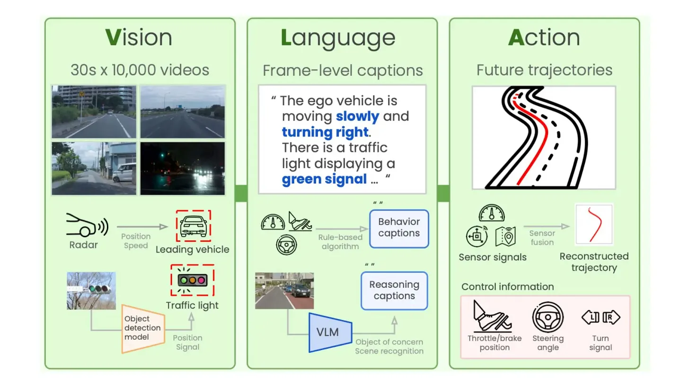
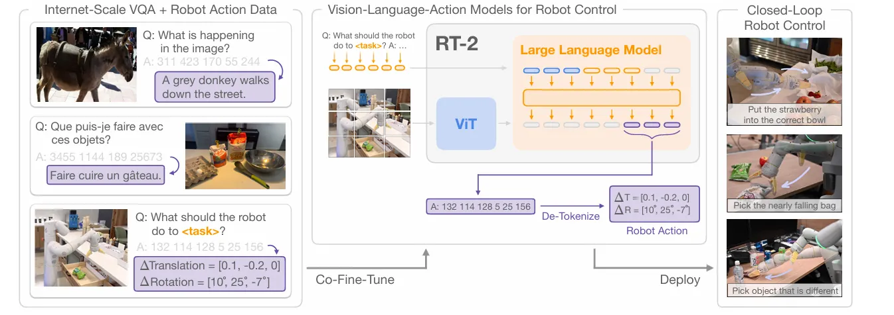
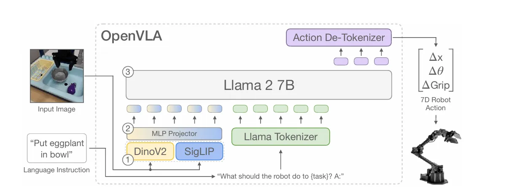
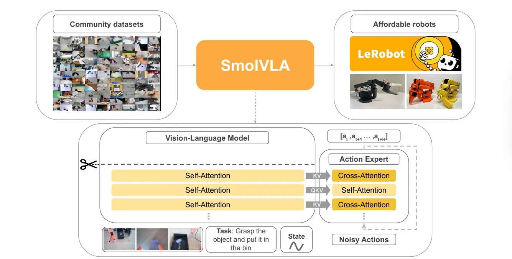
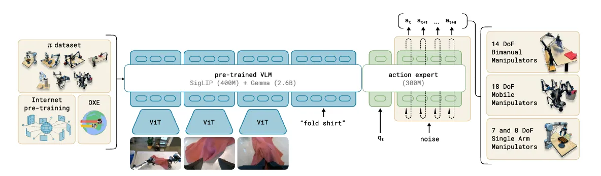

From Pixels to Poses Link to heading
Vision Language Action Models are large transformer models which predict robot actions, given observations from multiple cameras. They are usually trained on some pretrained vision language models, which makes them have a lot of knowledge of the world baked into them. VLA models bridge the gap between perception and physical movement. Unlike traditional modular pipelines, a VLA is typically end-to-end.
VLA architecture comprises of three things mainly:
- Vision Encoder: A pretrained vision model that encodes camera frames into visual tokens
- Language: A Large Language Model, this provides the reasoning and instruction following capabilities
- Action Head: This is the robotic part. The model does not just output text, it outputs action tokens. These tokens represent joint velocities or end effector poses (x, y, z, roll, pitch yaw, gripper).
I found these to be the general and most intuitive way to show VLA main components, a basic “see → understand → act” model. But different people have added flavours to the mix which introduce sophisticated variations to this fundamental flow. While the “see → understand → act” pipeline is the bedrock, modern architectures add layers of complexity to make the robot’s motion more fluid and precise.
I would be diving into few specific VLA models that are defining the field.
RT-2 Link to heading

RT-2 OverviewDeveloped by Google DeepMind, RT-2 is the poster child for the VLA movement. It proved that scaling works for robotics just as it does for LLMs, essentially “re-wiring” high-capacity vision-language models to output physical actions.
RT-2 isn’t built from scratch. Instead, it takes massive pre-trained models specifically PaLI-X (up to 55B parameters) and PaLM-E (12B parameters) and fine-tunes them for robotic tasks.
As shown in the diagram, the workflow follows a specific pipeline:
- Internet-Scale Data (Co-Fine-Tuning): The model is pre-trained on massive datasets of Visual Question Answering (VQA). This gives it the ability to understand that eggs and flour are used to “bake a cake,” knowledge it later applies to physical objects.
- The Robot’s View: The robot’s camera feed is split into patches and fed through a ViT (Vision Transformer), combining visual information with a natural language task (e.g., “What should the robot do to
?” ). - Action as Language: The genius of RT-2 is that it treats robot actions like text tokens. Just as an LLM predicts the next word, RT-2 predicts the next “action word” (discretized into 256 “bins” for movement).
When the LLM backbone processes the instruction, it outputs a string of numbers (e.g., 132 114 128 5 25 156) which is processed by the De-Tokenizer. This component converts those numbers into real-world units: Translation (movement in x, y, z space) and Rotation (changing the angle of the gripper).
Then the Closed-Loop Control, this allows the robot to perform complex tasks like picking up an object that is “different” from others, tasks requiring a deep semantic understanding of the world.
Emergent Capabilities: Reasoning in the Real World Link to heading
Because RT-2 is backed by a model that has “read the internet,” it exhibits emergent behavior, the ability to perform tasks it was never explicitly trained for in a lab:
- Semantic Reasoning: If you tell RT-2 to “pick up the extinct animal,” it can identify a toy dinosaur because its training taught it that dinosaurs are extinct.
- Improvised Problem Solving: It can reason through text-based logic to choose a rock when asked to find an “improvised hammer”.
The Trade-off: Power vs. Latency Link to heading
While RT-2 achieves a 90% success rate and vastly outperforms models using only robotic data, its size is its bottleneck. At 55B parameters, it cannot run locally on most robots. It typically requires a cloud-based multi-TPU setup, resulting in inference speeds of roughly 1–5 Hz. It’s a brilliant “thinker,” but often too slow for high-speed, reactive tasks.
OpenVLA Link to heading

OpenVLA architectureIf RT-2 is the proprietary giant, OpenVLA is the community’s answer, a high-performance, open-source VLA model designed to be accessible and fine-tunable for a wide variety of robotic platforms. Unlike its predecessors that rely on massive, closed-source backbones, OpenVLA is built on a 7B-parameter Llama 2 model. This makes it powerful enough for complex reasoning but efficient enough to be practical for researchers and developers.
The architecture of OpenVLA follows a sophisticated multi-stage pipeline as shown in your diagram above:
- Dual-Vision Encoder: It utilizes a fused visual encoder system, combining DinoV2 and SigLIP to process the input image. This “fused” approach allows the model to capture high-level semantic meaning alongside fine-grained spatial details.
- Reasoning Backbone: The core of the model is the Llama 2 7B transformer. It takes in the projected visual tokens alongside language instructions (like “Put eggplant in bowl”), which have been processed through a standard Llama tokenizer.
- Action Output: Just like RT-2, it predicts action tokens that are passed through an Action De-Tokenizer. This results in a 7D Robot Action vector, containing precise commands for translation (x, y, z), rotation (roll, pitch, yaw), and the gripper state (Grip).
What makes OpenVLA a major milestone is its data efficiency and scale. It was trained on the Open X-Embodiment dataset, a massive collection of 970,000 robot manipulation trajectories across diverse tasks and scenes. Despite having 7x fewer parameters than RT-2-X, OpenVLA actually outperforms it by 16.5% in absolute task success rate across nearly 30 evaluation tasks.
OpenVLA is designed for Parameter-Efficient Fine-Tuning (PEFT). By using techniques like LoRA, you can adapt this 7B model to a new robot setup or specific task using just a single consumer-grade GPU (like an A100 or even high-end RTX cards) in a matter of hours. This lowers the barrier to entry from “Google-level compute” to something an individual researcher or student can reasonably run.
SmolVLA Link to heading

SmolVLA architectureSmolVLA represents the move toward localized, efficient intelligence. Developed as part of the growing movement to make robotics more accessible, SmolVLA is designed specifically to run on affordable hardware and community-driven datasets. It bridges the gap between state-of-the-art AI and the world of “affordable robots” like the LeRobot platform.
The core innovation of SmolVLA, is its split architecture that separates general reasoning from high-speed motor control:
- The VLM Backbone: The model uses a standard Vision-Language Model stack comprised of multiple Self-Attention layers to process the multimodal inputs: camera frames, the text-based Task (e.g., “Grasp the object and put it in the bin”), and the robot’s current proprioceptive State.
- The Action Expert: Instead of the LLM trying to handle everything, it passes key information (via KV and QKV tensors) to a dedicated Action Expert. This specialized module uses a mix of Cross-Attention and Self-Attention to transform those high-level “thoughts” into a trajectory of actions [a(t), a(t+1), a(t+H)].
Mastering Dexterity with Diffusion Link to heading
A key feature highlighted in the general VLA architecture that is critical for SmolVLA is the integration of a Diffusion Transformer.
- Handling Uncertainty: In complex physical environments, there isn’t always one “correct” next move. By taking the action tokens from the LLM and feeding them into a diffusion process with Noisy Actions, the model can iteratively refine its plan.
- Smoothness and Precision: This allows the robot to achieve more fluid, human-like motion, especially when performing delicate tasks that require high-frequency adjustments.
SmolVLA is a gamechanger because it prioritizes efficiency without sacrificing the “world knowledge” that makes VLAs so powerful. By leveraging large-scale Community datasets, it learns from a vast array of human and robotic experiences but remains small enough to run with low latency on consumer-grade hardware. It proves that you don’t need a massive server rack to give a robot the ability to understand instructions and interact intelligently with its environment you just need a smarter, more compact architecture.
Pi0 Link to heading

Pi0 framework overviewWhile the models we’ve discussed so far focus on predicting discrete tokens, pi0 (developed by Physical Intelligence) marks a shift toward a more continuous, “physical” approach to robotics. It is designed to move past the stiffness of early models to achieve the fluid dexterity required for complex human-like tasks, such as folding laundry or clearing a table.
The architecture of pi0, is built on a massive foundation of multimodal data. It is pre-trained on a diverse “mix” of sources, including Internet pre-training, the OXE (Open X-Embodiment) dataset, and a proprietary pi dataset.
- The Backbone: The model utilizes a pre-trained VLM, specifically a combination of SigLIP (400M) for vision and Gemma (2.6B) for language reasoning. This gives the robot a high-level understanding of instructions like “fold shirt” based on visual inputs from multiple ViT (Vision Transformer) encoders.
- The Action Expert: The “brain” (VLM) then passes information to a specialized 300M parameter Action Expert. This is where the physical execution happens.
Flow Matching: From Tokens to Continuous Motion Link to heading
The most critical technical departure in pi0 is how it generates actions. Instead of simply outputting a single “word” for a move, it uses a Flow Matching approach (similar to Diffusion).
- The Input: The Action Expert takes in the current robot state, q(t), and a set of noisy initial guesses.
- The Process: By iteratively refining these guesses through the transformer, it “denoises” the plan to find the most efficient and fluid path for the robot’s joints.
- The Output: It doesn’t just predict the next millisecond; it generates a trajectory, a sequence of future actions [a(t), a(t+1), a(t+H)], allowing for smoother, more reactive control.
Generalization Across Different “Bodies” Link to heading
A defining strength of pi0 is its ability to control vastly different types of hardware using the same underlying model. As illustrated in the image above, the model is versatile enough to drive:
- 14 DoF Bimanual Manipulators (two-armed robots).
- 18 DoF Mobile Manipulators (robots that move and grab).
- 7 and 8 DoF Single Arm Manipulators.
By shifting the focus from “language prediction” to “physical flow matching,” pi0 represents a significant leap toward robots that don’t just understand what we say but can actually move with the grace and adaptability required to function in our messy, unpredictable world.
We are witnessing a fundamental shift in how we build intelligent machines. VLAs are dissolving these boundaries, replacing rigid code with embodied intelligence.
As we move from the “Google-sized” brains of RT-2 to the efficient, dexterous “physical intelligence” of pi0 and SmolVLA, the technology is moving out of the data center and onto the workshop floor. We are moving away from robots that merely “see” and “act” toward robots that “understand” the physical consequences of their movements.
For the next generation of engineers, the challenge isn’t just about writing faster algorithms; it’s about curating the data and fine-tuning the models that will allow robots to navigate our messy, unpredictable world with the same common sense we take for granted. The stack is no longer just on your screen; it’s finally getting a body.
Stay Nerdy!
Thanks for reading The Nerd’s Stack! Subscribe for free to receive new posts and support my work.